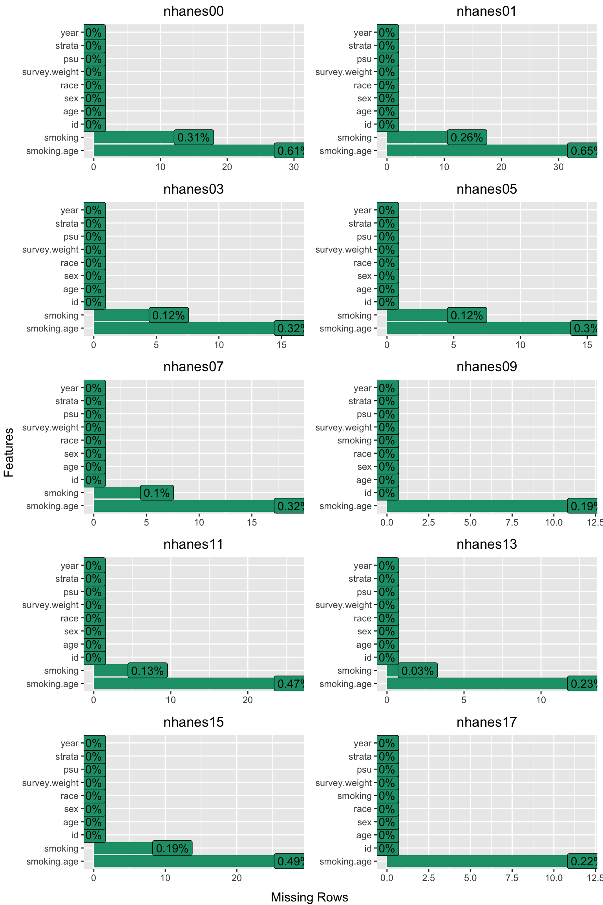

4 Data Download and Merging
This part of the tutorial covers the beginning of the data preparation workflow for the project. It details the process of downloading the raw NHANES data files, selecting relevant variables, and merging the files together. While these steps prepare the data primarily for the main survival analysis, similar preparation is also required for the subsequent sensitivity and exploratory analyses.
In this chapter, we will:
Programmatically download 20 separate data files from 10 NHANES cycles (1999-2018).
Select and process only the necessary variables for the analysis.
Merge the demographic and smoking data for each cycle.
Harmonize variable names that are inconsistent across different survey years.
We begin by loading the R packages required for this workflow.
4.1 Data Acquisition and Merging
- R Code Chunk 1: Load Necessary Packages
Before we begin the analysis, we import the necessary libraries to ensure we can use the certain functions. The nhanesA package is essential, as it provides functions to directly access and import the National Health and Nutrition Examination Survey (NHANES) datasets. In this package, data files from the 10 cycles (1999–2018) are denoted by lettered suffixes. For example, the demographics file for 1999–2000 is named DEMO, while subsequent cycles are named DEMO_B, DEMO_C, and up to the letter J. Other key packages are loaded to support data manipulation, variable recoding and merging.
- R Code Chunk 2: Define NHANES Datasets by Cycle
The first step in our workflow is to define character vectors using c() that contain the specific names of the NHANES data files we need to download. Following the nhanesA package’s naming convention, we create two vectors: demo for the demographic data files and smoking for the smoking questionnaire files, each covering the 10 cycles from 1999 to 2018.
- R Code Chunk 3: Download and Process NHANES Data
This code section covers several key steps: downloading the raw data, defining the variables of interest, and then subsetting and processing the data files.
1. Download Raw Data
With the data files’ names defined in the lists demo and smoking, we now use the lapply() function to iterate through each vector and download the corresponding data files using nhanesA::nhanes(). For reproducibility and to avoid re-downloading the data every time the script is run, we save these lists of raw data files as .rds files into a data/ subdirectory.
We will heavily use the lapply() function in this section. This is a more efficient and readable alternative to a for loop in R for applying the same operation to each element of a list (in our case, each data file name).
2. Define Variables for Selection
Next, we define the specific variables (columns) we want to keep for our analysis. We create two vectors, demo_columns and smoking_columns, listing our variables of interest.
It is important to note a key inconsistency across the NHANES cycles: the variable for the participant’s country of birth changes its name over time (DMDBORN, DMDBORN2, DMDBORN4). We include all three variations in our list to ensure we capture this information from every cycle. This will be changed into a single variable name later.
For the demographic data, we selected the following key columns:
-
SEQN: Respondent sequence number (unique identifier). -
RIDAGEYR: Age in years at screening. -
RIAGENDR: Gender. -
RIDRETH1: Race and ethnicity. -
DMDBORN/DMDBORN2/DMDBORN4: Country of birth. -
SDDSRVYR: NHANES survey cycle year. -
WTINT2YR: Full sample 2-year interview weight. -
WTMEC2YR: Full sample 2-year Mobile Examination Center (MEC) exam weight. -
SDMVPSU: Masked variance pseudo-Primary Sampling Unit. -
SDMVSTRA: Masked variance pseudo-stratum.
For the smoking data, we selected the following key columns:
-
SEQN: Respondent sequence number. -
SMQ020: Indicates if respondent smoked at least 100 cigarettes in life. -
SMD030: Age respondent started smoking cigarettes regularly. -
SMQ040: Current cigarette smoking status
3. Subset Data and Translate Codes
The final step in this section is to process the raw data. We iterate through each downloaded data file in the lists, demo_data_files and smoking_data_files, and perform two key operations:
- Select Columns: We use
dplyr::select()with theany_of()helper to keep only the columns defined above indemo_columnsandsmoking_columns. Usingany_of()prevents errors if a column name (e.g.,DMDBORN2) doesn’t exist in a particular data file. - Translate Codes: We use
nhanesA::nhanesTranslate()to convert the numeric codes in the data (e.g.,1for ‘Male’) into more descriptive, human-readable factor labels.
The newly processed lists of data frames are stored in demo_data_files_2 and smoking_data_files_2.
Show/Hide Code
# DEMOGRAPHICS
demo_data_files_2 <- lapply(seq_along(demo_data_files), function(i) {
current_cycle_data <- demo_data_files[[i]]
original <- demo[i]
# Select Columns
subset_data <- current_cycle_data %>%
dplyr::select(dplyr::any_of(demo_columns))
# Translate
translated_data <- nhanesTranslate(original,
names(subset_data),
data = subset_data)
# Return
return(translated_data)
})
#> Translated columns: RIAGENDR RIDRETH1 DMDBORN SDDSRVYR
#> Translated columns: RIAGENDR RIDRETH1 DMDBORN SDDSRVYR
#> Translated columns: RIAGENDR RIDRETH1 DMDBORN SDDSRVYR
#> Translated columns: RIAGENDR RIDRETH1 DMDBORN SDDSRVYR
#> Translated columns: RIAGENDR RIDRETH1 DMDBORN2 SDDSRVYR
#> Translated columns: RIAGENDR RIDRETH1 DMDBORN2 SDDSRVYR
#> Translated columns: RIAGENDR RIDRETH1 DMDBORN4 SDDSRVYR
#> Translated columns: RIAGENDR RIDRETH1 DMDBORN4 SDDSRVYR
#> Translated columns: RIAGENDR RIDRETH1 DMDBORN4 SDDSRVYR
#> Translated columns: RIAGENDR RIDRETH1 DMDBORN4 SDDSRVYR
# SMOKING
smoking_data_files_2 <- lapply(seq_along(smoking_data_files), function(i) {
current_cycle_data <- smoking_data_files[[i]]
original <- smoking[i]
# Select Columns
subset_data <- current_cycle_data %>%
dplyr::select(dplyr::any_of(smoking_columns))
# Translate
translated_data <- nhanesTranslate(original,
names(subset_data),
data = subset_data)
# Return
return(translated_data)
})
#> Translated columns: SMQ020 SMQ040
#> Translated columns: SMQ020 SMQ040
#> Translated columns: SMQ020 SMQ040
#> Translated columns: SMQ020 SMQ040
#> Translated columns: SMQ020 SMQ040
#> Translated columns: SMQ020 SMQ040
#> Translated columns: SMQ020 SMQ040
#> Translated columns: SMQ020 SMQ040
#> Translated columns: SMQ020 SMQ040
#> Translated columns: SMQ020 SMQ040- R Code Chunk 4: Merging Datasets
Now that we have two processed lists of data frames (one for demographics and one for smoking), we need to merge them for each NHANES cycle. We iterate through both lists (demo_data_files_2 and smoking_data_files_2), combining each corresponding pair of cycle-specific data frames into a single data frame.
The merge is performed using plyr::join_all() with the unique participant identifier, SEQN, as the key. We use a type = 'full' join to ensure that all participants from both datasets are kept in the final merged data, while NA values will be inserted for any non-matching records.
The final output, data_all, is a single list containing 10 merged data frames (one for each NHANES cycle).
4.2 Variable Recoding and Cleaning
- R Code Chunk 5: Data Recoding and Cleaning
This code chunk is the most extensive data processing step of the tutorial. Here, we will loop through each of the 10 merged data frames stored in data_all to perform data cleaning and recoding. The goal is to create a new, standardized set of variables that are consistent across all survey cycles.
We will create clean variables for participant ID, demographics, smoking behavior, and survey design features.
1. Solve Inconsistent Column Names
As noted previously, the column name for the country of birth is inconsistent across cycles (DMDBORN, DMDBORN2, DMDBORN4). Before we can recode the values, we must first combine these into a single, consistent column name, DMDBORN. The following loop handles this standardization.
2. Recoding Reference Table
The table below summarizes the key new variables that will be created below. This serves as a quick reference for the data cleaning process.
| New Variable | Description |
|---|---|
id |
Unique participant ID (from SEQN) |
age |
Age in years at screening (from RIDAGEYR) |
sex |
Biological sex (from RIAGENDR) |
race |
Race/ethnicity (from RIDRETH1), recoded into White, Black, Hispanic, Others |
born |
Country of birth (from DMDBORN), recoded as “Born in US” or “Other place” |
smoking |
Smoking status categorized into Never, Previous, or Current (from SMQ020 and SMQ040) |
smoking.age |
Age participant started smoking (SMD030), with special codes 777, 999 replaced by NA, and 0 for never smokers |
smoked.while.child |
Derived variable indicating if smoking started at age 15 or younger |
survey.weight |
Full sample 2-year interview weight (from WTINT2YR) |
psu |
Masked variance pseudo-Primary Sampling Unit (from SDMVPSU) |
strata |
Masked variance pseudo-stratum (from SDMVSTRA) |
year |
Survey cycle year (from SDDSRVYR) |
3. Recoding and Cleaning Data
Now, we will perform the recoding in a series of steps. For clarity in this tutorial, we use a separate loop for each group of variables.
First, we create a simple ID variable from the original SEQN variable.
Next, we recode the core demographic variables. This includes creating simple lowercase versions of age and sex, and collapsing the detailed categories for race and born into simpler factors using car::recode().
Show/Hide Code
for (i in seq_along(data_all2)) {
# Set Data
dat2 <- data_all2[[i]]
# Age
dat2$age <- dat2$RIDAGEYR
# Sex
dat2$sex <- dat2$RIAGENDR
# Race/Ethnicity
dat2$race <- dat2$RIDRETH1
dat2$race <- car::recode(dat2$race, recodes = "
'Non-Hispanic White'='White';
'Non-Hispanic Black'='Black';
c('Mexican American','Other Hispanic')='Hispanic';
else='Others'")
dat2$race <- factor(dat2$race,
levels = c("White", "Black",
"Hispanic", "Others"))
# Country of birth
dat2$born <- dat2$DMDBORN
dat2$born <- car::recode(dat2$born, recodes = "
c('Born in Mexico','Born Elsewhere', 'Others') = 'Other place';
c('Born in 50 US States or Washington, DC',
'Born in 50 US states or Washington, DC') = 'Born in US';
else = NA")
dat2$born <- factor(dat2$born,
levels = c("Born in US", "Other place"))
# Return
data_all2[[i]] <- dat2
}The tables below summarize the recoding logic for the demographic variables.
| Original Variable | Original Categories | New Variable | New Categories |
|---|---|---|---|
RIDRETH1 |
Non-Hispanic White |
race |
White |
Non-Hispanic Black |
Black |
||
Mexican American, Other Hispanic
|
Hispanic |
||
Non-Hispanic Asian, Other Race
|
Others |
||
DMDBORN |
Born in 50 US States or Washington, DC |
born |
Born in US |
Born in Mexico, Born Elsewhere, Others
|
Other place |
Next, we recode the smoking variables. A key step here is creating the three-level smoking status factor (Never, Previous, Current). This requires using both SMQ020 (smoked 100+ cigarettes) and SMQ040 (smokes at all now) to correctly identify former smokers. We also clean the smoking.age variable and create a new binary variable, smoked.while.child.
Show/Hide Code
for (i in seq_along(data_all2)) {
# Set Data
dat2 <- data_all2[[i]]
# Smoking Status
dat2$smoking <- dat2$SMQ020
dat2$smoking <- car::recode(dat2$smoking, "
'Yes' = 'Current smoker';
'No' = 'Never smoker';
else = NA")
dat2$smoking <- factor(dat2$smoking,
levels = c("Never smoker",
"Previous smoker",
"Current smoker"))
# Use SMQ040 to identify former smokers
dat2$smoking[dat2$SMQ040 == "Not at all?" |
dat2$SMQ040 == "Not at all"] <- "Previous smoker"
# Age Started Smoking
dat2$smoking.age <- dat2$SMD030
dat2$smoking.age[dat2$smoking.age %in% c(777, 999)] <- NA
dat2$smoking.age[is.na(dat2$smoking.age) &
dat2$smoking == "Never smoker"] <- 0
# Whether Smoking started age ≤ 15
dat2$smoked.while.child <- car::recode(dat2$smoking.age,
"0 = 'No'; 7:15 = 'Yes'; else = NA", as.factor = TRUE)
# Return
data_all2[[i]] <- dat2
}The table below summarizes the logic for creating the final smoking status variable.
| Step | Original Variable(s) | Logic | Resulting Category |
|---|---|---|---|
| 1 | SMQ020 |
No |
Never smoker |
| 2 | SMQ020 |
Yes |
Current smoker |
| 3 | SMQ040 |
If SMQ020 is Yes AND SMQ040 is Not at all, re-categorize |
Previous smoker |
For smoking.age, numeric codes for “Refused” (777) and “Don’t know” (999) were recoded to NA, and a value of 0 was assigned to never smokers for clarity.
Finally, we create lowercase versions of the survey design variables for ease of use in later analyses.
4.3 Finalizing Datasets and Assessing Data Completeness
- R Code Chunk 6: Create, Save, and Plot Datasets
The final step is to create the analytic datasets and save them for use in subsequent chapters. The following code loops through each of the 10 cleaned data frames and performs several actions:
- Selects the final set of cleaned variables.
- Creates the final analytic sample by filtering for eligible participants.
- Generates a missing data plot for each cycle and stores it in a list.
- Saves the data for each cycle into a separate .RData file.
First, we define two vectors: nhanes_all contains the desired names for each cycle’s data frame (e.g., nhanes00, nhanes01, etc.), and vars lists the set of cleaned variable names we want to keep for the analysis.
Within the loop, the code subsets the data to include only participants aged 20 years or older, matching the age criteria of the original paper. It then saves both the full data frame (all ages) and the filtered analytic data frame (ages 20+) into a single .RData file in the data/ directory (e.g., analytic00.RData).
Show/Hide Code
nhanes_all <- c("nhanes00", "nhanes01", "nhanes03", "nhanes05",
"nhanes07", "nhanes09", "nhanes11",
"nhanes13", "nhanes15", "nhanes17")
vars <- c("id", "age", "sex", "race", "born",
"smoking.age", "smoked.while.child", "smoking",
"survey.weight", "psu", "strata", "year")
missing_plots <- list()
for (i in seq_along(data_all2)) {
dat2 <- data_all2[[i]]
nhanes_i <- nhanes_all[i]
assign(nhanes_i, dat2[, vars], envir = .GlobalEnv)
analytic <- subset(get(nhanes_i), age >= 20)
# Create a temporary dataset for plotting, excluding irrelevant variables
data_for_plot <- analytic %>%
dplyr::select(-born, -smoked.while.child)
# Generate a plot, add a title, and remove individual axis titles
p <- plot_missing(data_for_plot) +
labs(title = nhanes_i) +
theme(
plot.title = element_text(hjust = 0.5),
legend.position = "none",
axis.title = element_blank()
)
missing_plots[[i]] <- p
cat("Processing:", nhanes_i, "\n")
print(dim(analytic))
analytic_i <- paste0("analytic", substr(nhanes_i, 7, 8))
assign(analytic_i, analytic, envir = .GlobalEnv)
# Create 'data' directory if it does not exist
if (!dir.exists("data")) {
dir.create("data")
}
# Save
save(list = c(nhanes_i, analytic_i),
file = file.path("data", paste0(analytic_i, ".RData")))
}
#> Processing: nhanes00
#> [1] 4880 12
#> Processing: nhanes01
#> [1] 5411 12
#> Processing: nhanes03
#> [1] 5041 12
#> Processing: nhanes05
#> [1] 4979 12
#> Processing: nhanes07
#> [1] 5935 12
#> Processing: nhanes09
#> [1] 6218 12
#> Processing: nhanes11
#> [1] 5560 12
#> Processing: nhanes13
#> [1] 5769 12
#> Processing: nhanes15
#> [1] 5719 12
#> Processing: nhanes17
#> [1] 5569 12Finally, the 10 missing data plots are displayed in a single 5x2 grid.
Show/Hide Code

This concludes the first part of the data preparation stage.
4.4 Chapter Summary and Next Steps
We have now successfully completed the initial data acquisition and preparation phase. We have downloaded 20 raw data files, processed them into a consistent format, and merged them into a single list of 10 data frames—one for each NHANES cycle.
In the next chapter, “Mortality and NHANES Merging,” we will combine these 10 data frames and link them with the public-use mortality data to create the final, comprehensive dataset for our analysis.